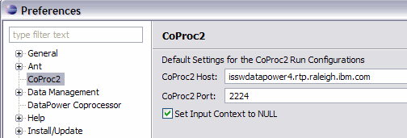
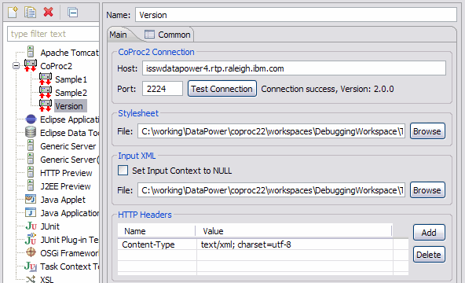
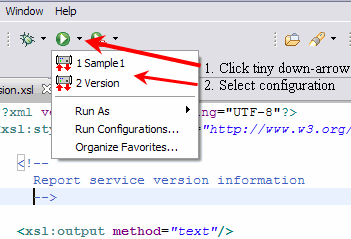

CoProc2 Run Configurations
The Eclipse platform allows developers to launch various types
of programs using using a collection of information called a
run configuration. The most common run configuration is
used for launching Java applications. But other run configuration
types exist for launching
- Java Applets
- Application server test instances
- JUnit tests
- Eclipse plug-ins
- XSLTs
The last example listed is an Eclipse launcher that executes XSLTs
against Java XSL processors such as Saxon and Xalan. The CoProc2
launcher executes an XSLT on a remote DataPower appliance and returns
the results to the console.
Each CoProc2 run configuration requires host and port information
for invoking the CoProc2 service running on the DataPower appliance.
This information can be added to the CoProc2 preferences so that the
values are filled automatically.

To create a new CoProc2 run configuration follow these steps.
- Select Run → Run Configurations ... from the
workbench menu.
- Select CoProc2 from the list of run configurations
on the left. If CoProc2 is difficult to find, type "coproc"
in the filter box to narrow the choices.
- Right-click the entry and select New.
- Fill in the fields (described below) and click Run.
The screenshot below illustrates the options available for a
CoProc2 runtime configuration.

It contains the following sections.
A host and port is required to connect to the CoProc2 service. SSL is not
supported in this prototype release. A Test Connection button
allows for testing the connection before submitting the stylesheet.
If the connection test is successful, it should report the version
of the CoProc service running on the DataPower appliance.
The stylesheet field specifies the stylesheet to be processed. There is
no requirement that this stylesheet be in the workspace.
If the stylesheet is to process XML input, the XML input is specified here.
Otherwise, if the stylesheet expects a NULL input context, simply check
the Set Input Context to NULL box and no input is required.
Additional HTTP header entries can be defined for the request.
Note that Content-Type is required to be present. It's
created by default for each new run configuration but its value
may be changed. The two most popular values are
- default: text/xml; charset=utf-8
- SOAP 1.2: application/soap+xml
Click the Run button in the configuration editor to run the
configuration. Subsequent runs can be started directly through the
Eclipse workbench tool bar.

The output is returned via the console view.